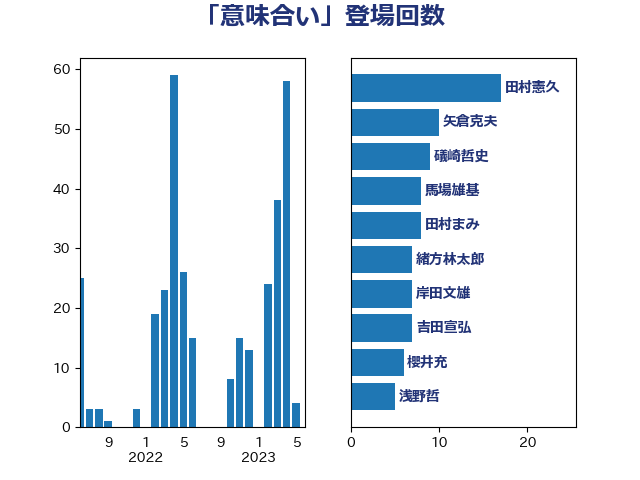

単語「意味合い」

| 田村憲久 | 自由民主党 | 95 回 |
| 矢倉克夫 | 公明党 | 12 回 |
| 櫻井充 | 自由民主党 | 10 回 |
| 菅義偉 | 自由民主党 | 9 回 |
| 吉田宣弘 | 公明党 | 7 回 |
| 田村まみ | 国民民主党 | 7 回 |
| 岸田文雄 | 自由民主党 | 6 回 |
| 稲津久 | 公明党 | 4 回 |
| 緒方林太郎 | 無所属 | 4 回 |
| 中山展宏 | 自由民主党 | 3 回 |
| 勝部賢志 | 立憲民主党 | 3 回 |
| 古川禎久 | 自由民主党 | 3 回 |
| 吉川元 | 立憲民主党 | 3 回 |
| 塩村あやか | 立憲民主党 | 3 回 |
| 大西健介 | 立憲民主党 | 3 回 |
| 礒崎哲史 | 国民民主党 | 3 回 |
| 茂木敏充 | 自由民主党 | 3 回 |
| 高木かおり | 日本維新の会 | 3 回 |
| 三木亨 | 自由民主党 | 2 回 |
| 中谷一馬 | 立憲民主党 | 2 回 |
| 串田誠一 | 日本維新の会 | 2 回 |
| 倉林明子 | 日本共産党 | 2 回 |
| 吉川赳 | 無所属 | 2 回 |
| 後藤祐一 | 立憲民主党 | 2 回 |
| 末松信介 | 自由民主党 | 2 回 |
| 柴田巧 | 日本維新の会 | 2 回 |
| 田名部匡代 | 立憲民主党 | 2 回 |
| 田村智子 | 日本共産党 | 2 回 |
| 神谷裕 | 立憲民主党 | 2 回 |
| 笠浩史 | 無所属 | 2 回 |
| 藤田文武 | 日本維新の会 | 2 回 |
| 西村康稔 | 自由民主党 | 2 回 |
| 赤羽一嘉 | 公明党 | 2 回 |
| 鈴木宗男 | 日本維新の会 | 2 回 |
| 青木愛 | 立憲民主党 | 2 回 |
| 音喜多駿 | 日本維新の会 | 2 回 |
| 高良鉄美 | 無所属 | 2 回 |
| 上川陽子 | 自由民主党 | 1 回 |
| 上田清司 | 国民民主党 | 1 回 |
| 上野通子 | 自由民主党 | 1 回 |
| 中西健治 | 自由民主党 | 1 回 |
| 伊藤孝恵 | 国民民主党 | 1 回 |
| 佐藤啓 | 自由民主党 | 1 回 |
| 勝目康 | 自由民主党 | 1 回 |
| 古賀之士 | 立憲民主党 | 1 回 |
| 古賀友一郎 | 自由民主党 | 1 回 |
| 吉川沙織 | 立憲民主党 | 1 回 |
| 吉田統彦 | 立憲民主党 | 1 回 |
| 城井崇 | 立憲民主党 | 1 回 |
| 堀場幸子 | 日本維新の会 | 1 回 |
| 大島敦 | 立憲民主党 | 1 回 |
| 守島正 | 日本維新の会 | 1 回 |
| 安達澄 | 無所属 | 1 回 |
| 小倉將信 | 自由民主党 | 1 回 |
| 小山展弘 | 立憲民主党 | 1 回 |
| 小熊慎司 | 立憲民主党 | 1 回 |
| 山田勝彦 | 立憲民主党 | 1 回 |
| 山田賢司 | 自由民主党 | 1 回 |
| 山際大志郎 | 自由民主党 | 1 回 |
| 岸信夫 | 自由民主党 | 1 回 |
| 川合孝典 | 国民民主党 | 1 回 |
| 徳永エリ | 立憲民主党 | 1 回 |
| 打越さく良 | 立憲民主党 | 1 回 |
| 斎藤嘉隆 | 立憲民主党 | 1 回 |
| 新垣邦男 | 立憲民主党 | 1 回 |
| 早稲田ゆき | 立憲民主党 | 1 回 |
| 柚木道義 | 立憲民主党 | 1 回 |
| 柳ヶ瀬裕文 | 日本維新の会 | 1 回 |
| 梶山弘志 | 自由民主党 | 1 回 |
| 武田良太 | 自由民主党 | 1 回 |
| 江島潔 | 自由民主党 | 1 回 |
| 池畑浩太朗 | 日本維新の会 | 1 回 |
| 湯原俊二 | 立憲民主党 | 1 回 |
| 牧島かれん | 自由民主党 | 1 回 |
| 牧義夫 | 立憲民主党 | 1 回 |
| 田島麻衣子 | 立憲民主党 | 1 回 |
| 石垣のりこ | 立憲民主党 | 1 回 |
| 石川大我 | 立憲民主党 | 1 回 |
| 石橋林太郎 | 自由民主党 | 1 回 |
| 石橋通宏 | 立憲民主党 | 1 回 |
| 石田昌宏 | 自由民主党 | 1 回 |
| 福山哲郎 | 立憲民主党 | 1 回 |
| 福岡資麿 | 自由民主党 | 1 回 |
| 秋本真利 | 自由民主党 | 1 回 |
| 穀田恵二 | 日本共産党 | 1 回 |
| 竹内真二 | 公明党 | 1 回 |
| 笹川博義 | 自由民主党 | 1 回 |
| 篠原豪 | 立憲民主党 | 1 回 |
| 紙智子 | 日本共産党 | 1 回 |
| 緑川貴士 | 立憲民主党 | 1 回 |
| 美延映夫 | 日本維新の会 | 1 回 |
| 舞立昇治 | 自由民主党 | 1 回 |
| 舟山康江 | 国民民主党 | 1 回 |
| 若宮健嗣 | 自由民主党 | 1 回 |
| 西村智奈美 | 立憲民主党 | 1 回 |
| 谷公一 | 自由民主党 | 1 回 |
| 豊田俊郎 | 自由民主党 | 1 回 |
| 赤木正幸 | 日本維新の会 | 1 回 |
| 辻清人 | 自由民主党 | 1 回 |
| 近藤和也 | 立憲民主党 | 1 回 |
| 進藤金日子 | 自由民主党 | 1 回 |
| 里見隆治 | 公明党 | 1 回 |
| 野田聖子 | 自由民主党 | 1 回 |
| 鈴木義弘 | 国民民主党 | 1 回 |
| 鈴木隼人 | 自由民主党 | 1 回 |
| 長友慎治 | 国民民主党 | 1 回 |
| 長浜博行 | 無所属 | 1 回 |
| 馬場伸幸 | 日本維新の会 | 1 回 |
| 馬場雄基 | 立憲民主党 | 1 回 |
| 高橋英明 | 日本維新の会 | 1 回 |